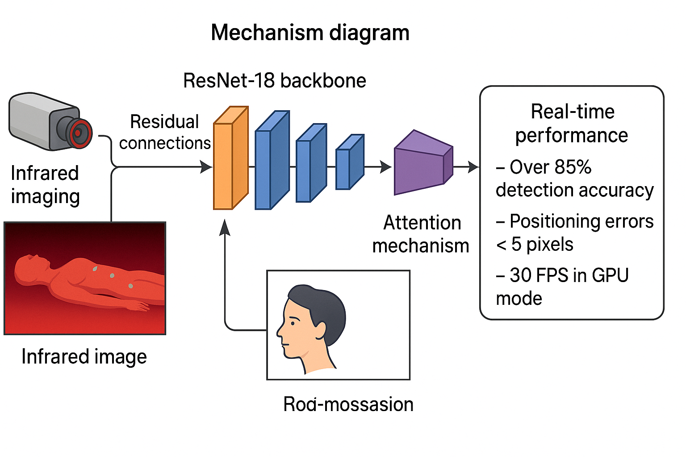
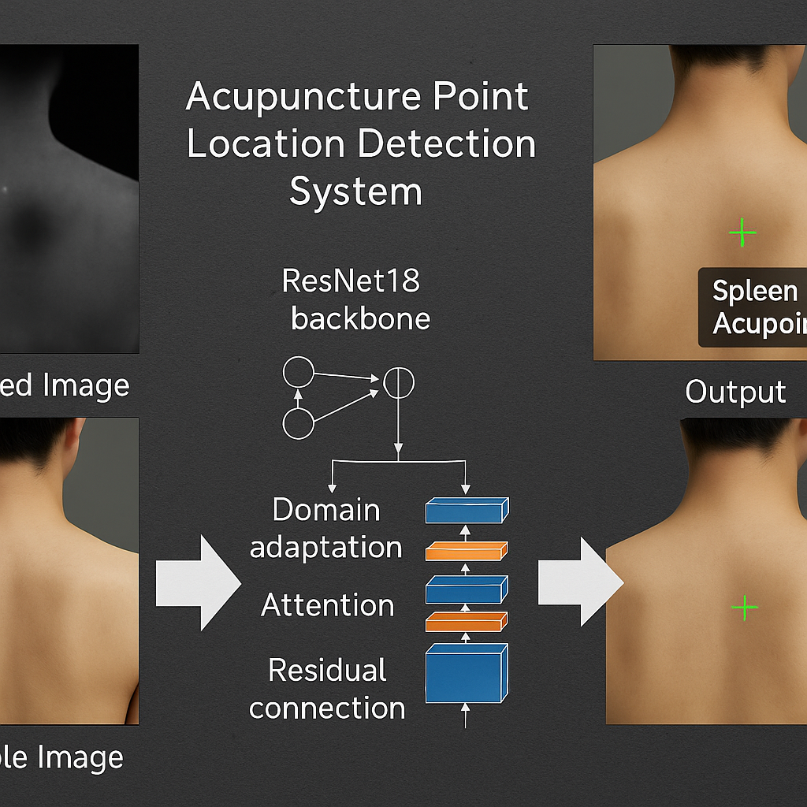

基于深度学习的AI辅助针灸定位解决方案
针灸穴位关键点检测系统是一个基于深度学习的计算机视觉项目，旨在解决传统中医针灸治疗中穴位定位的精确性问题。传统针灸依赖医师的经验和触觉判断，存在主观性强、定位精度不高等问题。
本项目通过结合红外成像技术和深度学习算法，实现了对针灸穴位的自动化、精确化检测，为中医针灸的现代化和标准化提供了技术支撑。系统采用ResNet18骨干网络，集成了残差连接、域适应层和注意力机制等创新模块。
系统达到85%以上的检测准确率，定位误差小于5像素，在GPU模式下实现30FPS的实时性能，为针灸治疗提供客观、精确的定位参考，推动中医针灸的现代化发展。


class AttentionModule(nn.Module):
def __init__(self, channels):
super(AttentionModule, self).__init__()
self.conv1 = nn.Conv2d(channels, channels//8, kernel_size=1)
self.conv2 = nn.Conv2d(channels//8, channels, kernel_size=1)
self.sigmoid = nn.Sigmoid()
def forward(self, x):
# 空间注意力机制
avg_pool = torch.mean(x, dim=1, keepdim=True)
max_pool, _ = torch.max(x, dim=1, keepdim=True)
pool = torch.cat([avg_pool, max_pool], dim=1)
y = self.conv1(x)
y = F.relu(y)
y = self.conv2(y)
y = self.sigmoid(y)
return x * y
| 性能参数 | 指标值 | 说明 |
|---|---|---|
| 检测准确率 | 85%+ | 关键点检测的准确率 |
| 定位误差 | <5像素 | 平均欧氏距离误差 |
| 实时性能 | 30FPS | GPU模式下的处理速度 |
| 响应延迟 | <100ms | 端到端处理延迟 |
| 图像分辨率 | 1920×1080 | 支持的高分辨率输入 |
为针灸医师提供精确的穴位定位参考，提高治疗精度和效果。系统的高精度定位能力能够帮助医师在复杂解剖结构中准确找到目标穴位。
辅助中医针灸的教学和培训，为学员提供标准化的穴位定位指导。系统可以展示不同个体的穴位位置差异，帮助理解个体化治疗的重要性。
为针灸机理研究提供数据支持，支持大规模临床数据的收集和分析。通过精确的穴位定位，可以研究不同穴位组合的治疗效果。
推动针灸治疗的标准化和规范化，建立客观的穴位定位标准。系统可以为针灸治疗的质量控制提供技术支持。
本项目成功构建了一个基于深度学习的针灸穴位关键点检测系统，通过创新的网络架构设计、多模态数据融合和精确的图像配准技术，实现了对针灸穴位的自动化、精确化检测。
项目在技术实现、应用价值和创新性方面都取得了显著成果，为中医针灸的现代化和标准化提供了重要的技术支撑，推动了传统医学与现代技术的深度融合。